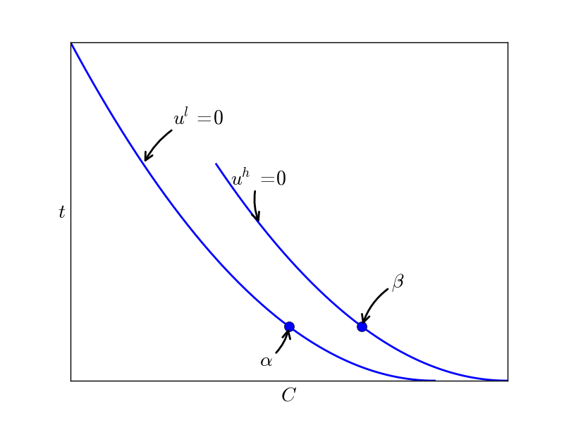

Innovation and Regulation Lecture Notes¶
Competition policy, IP rights and innovation¶
Motivation¶
Why do we care about the relation between competition and innovation?
We know that competition improves static efficiency (reduces the deadweight loss)
However, if more intense competition would reduce innovation, this loss is probably bigger than the gain in consumer surplus
Better to have a product that is expensive than one that has not been invented at all
On the other hand, if more intense competition stimulates innovation, then competition improves both static and dynamic efficiency
Then the arguments to liberalize and deregulate sectors become stronger.
When a competition authority calculates the value it creates for society, it should not only focus on lower prices for consumers but also take into account that competition leads to more, better and cheaper products.
Further, if a merger is expected to increase market power, it will not only raise prices but also reduce innovation. Gives even stronger arguments to abolish the merger.
how does the relation between competition and innovation affect IP law?
Incentives¶
Ex ante vs Ex post competition
An intuition that is often mentioned is that under perfect competition there cannot be innovation: with each firm pricing at marginal costs, profits are zero and hence there is no incentive to innovate.
This intuition is incorrect as it confuses ex ante and ex post competition.
Obviously, if you invent a cheaper way to produce products, the (intellectual) property right should be protected (e.g. through a patent or through secrecy)
Hence, ex post your competitors should not have free access to your innovation; this will create market power for the inventor ex post
However, the first question we are interested in is: how does ex ante competition affect the incentives to innovate?
We will look at a number of “stories” here:
competition enhances the incentive to innovate directly
competition enhances the incentive to innovate by disciplining firms’ managers
competition raises the incentives to innovate, but reduces it for very high “levels of competition” (inverse U)
Competition raises innovation
Consider a market with linear demand \(x=1-p\) where the current state of the art technology produces the product with constant marginal costs \(c > 0\).
Assume a new technology can be invented that reduces marginal costs to \(c’ =0\)
If there is a monopoly in the sector, she will maximize profits \begin{equation} \label{eq:Mon} (p-c)(1-p) \end{equation}
TODO the monopolist chooses \(p=\textstyle{1\over 2} (1+c)\) and profit equals \(\pi^m = \textstyle{1\over 4} (1-c)^2\). check
The incentive for the monopolist to innovate is given by \begin{equation} \label{eq:IncMon} \Delta^m = \textstyle{1\over 4} - \textstyle{1\over 4}(1-c)^2 \end{equation}
Now assume that we have at least two firms who play a Bertrand game.
Before the innovation, \(p^B = c\) and all firms have zero profits.
If one firm gets the patent on the innovation, his profits equal (assuming \(c < \textstyle{1\over 2}\)) \(\pi^B = c(1-c)\)
Hence the incentive to innovate equals \begin{equation} \label{eq:IncBertr} \Delta^B = c(1-c) \end{equation}
TODO which exceeds \(\Delta^m\) check
intuition: competition forces the firm to produce more and hence the reduction in marginal costs (\(c’-c\)) yields a gain over a higher output level
If \(c \geq \textstyle{1\over 2}\), the price after the innovation does not equal \(c\) but equals the monopoly price \(\textstyle{1\over 2}\) (innovation is drastic)
In that case, \(\pi^B = \pi^m\) after the innovation. But before innovating, the Bertrand profit equals 0 while monopoly profit is strict positive
This is called the Arrow replacement effect: a monopolist replaces herself and therefore has less incentive to innovate.
If competition is intensified through entry by firms under, say, Cournot competition, each firm’s output level goes down (also after innovation) and hence such an increase in competition may reduce the incentive to innovate.
competition disciplines managers Aghion et al. (1999)
Above we assumed that firms were run by their owners and hence maximized profits
many firms are run by managers who do not own all equity
These managers do not necessarily maximize profits
Assume that such managers want to minimize effort and that adopting and implementing innovations requires managers’ efforts
Then managers will tend to reduce their effort as much as possible, unless they are about to go bankrupt (in which case they lose their salary and other on-the-job perks)
By intensifying competition, firms’ profits are reduced and hence the threat of bankruptcy comes more quickly
After the increase in competition managers are forced to innovate more to avoid bankruptcy
Hence the effect here is: more competition reduces profits and thereby raises innovation
Inverted U
Aghion et al. (2005) show empirically that there may be both a positive and negative effect of competition on innovation
They consider the following duopoly model
There are two firms in an industry that compete over time in both production and innovation
The two firms may have the same technology (say, same cost level); in that case they are ``level’’
If one of these firms innovates, he gets one step ahead (\(+1\)) of the other firm who then lags one step behind (\(-1\))
By assumption, firms cannot be more than one step apart
A firm that is one step ahead (behind) makes profits \(\pi_{+1} (\pi_{-1})\). These profits are given.
Level firms make a profit equal to \(\pi_0 \in [0,\textstyle{1\over 2} \pi^m_0]\), the higher this profit is, the less competitive the industry
If \(\pi_0 = \textstyle{1\over 2} \pi^m\) each firm makes half the monopoly profit due to a cartel; with \(\pi_0 =0\) we have Bertrand competition.
What are the incentives to innovate?
If both firms are level, as a first approx. the gain to innovating equals \(\Delta_0 = \pi_{+1} - \pi_0\) because if a firm innovates, it moves one step ahead and makes profits equal to \(\pi_{+1}\) instead of \(\pi_0\)
Similarly, when the firm lags behind, the incentive to catch up equals \(\Delta_{-1} = \pi_0 - \pi_{-1}\)
Modelling an increase in competition as a fall in \(\pi_0\), we find that such an increase in competition raises \(\Delta_0\) while it reduces \(\Delta_{-1}\)
In other words, more intense competition increases the incentive to innovate to escape the competition but it reduces the incentive to catch up
When competition is weak, the sector is level most of the time (as there is hardly an incentive to escape the competition), hence an increase in competition in this case will raise innovation (on average) in this industry
As competition keeps on increasing, the sector is (on average) more often unlevel (as the escape the competition effect is increased while the catch up effect is reduced)
Hence for high enough competition intensity, the sector is almost always unlevel and a further increase in competition reduces innovation (on average) as the reduction in the catch up effect dominates the escape the competition effect
In this case, one finds an inverse U relation between competition and innovation
Schumpeterian argument
Sometimes, people claim that Schumpeter’s argument for market power to stimulate innovation should be interpreted as pointing to capital market imperfections
The idea is then that R&D is intangible capital (you cannot take a mortgage on R&D investment as you can on an office building)
Hence it is hard for the capital market to finance R&D
Therefore R&D needs to be financed out of retained earnings
The more (ex ante) market power a firm has, the higher its profits and thus the more R&D it can finance itself
Due to the capital market imperfection, a reduction in competition intensity increases innovation
In principle this may be true, however, it is not obvious
The capital market imperfection stems from the problem that debt and equity holders cannot monitor the way the money is spent (e.g. whether it is really spent on R&D or whether a manager is giving presents to friends and family)
As capital providers cannot be sure that the money is well spent, they do not lend money to the firm
Given these problems, how can we be sure that the higher profits (due to reduced competition) will be spent efficiently on R&D?
Antitrust and innovation¶
models above consider the effect of competition, not directly “competition policy”
Segal and Whinston (2007) model antitrust policy in a more concrete way
question is whether competition policy should be different in innovative industries
in competition policy lectures we have considered attempts by incumbents to exclude entrants
we derived conditions under which such behaviour is profitable for incumbents but bad for welfare
one way to introduce innovation into this story is to assume that an entrant can innovate to enter the industry
if the incumbent uses exclusionary practices, entry becomes harder
antitrust policy reducing such practices stimulates entry (direct effect) and hence innovation
but with this antitrust policy, the entrant knows that she cannot use exclusionary practices once she has entered successfully
this indirect effect reduces the incentives to innovate by the entrant
Segal and Whinston analyze the overall effect of policies aimed at reducing exclusionary practices
model
duopoly model, incumbent \(I\) and (potential) entrant \(E\)
only entrant can invest \(c(\phi)\) to innovate with probability \(\phi\); \(c,c’,c^{\prime\prime} >0\)
if entrant innovates, she receives patent on product which is \(\Delta > 0\) better than incumbent’s product
if entrant does not innovate, incumbent has profits \(\pi_{m}\)
if entrant innovates and enters, in the period of entry profits are given by \(\pi_{I},\pi_{E}\)
then incumbent leaves the market and becomes potential entrant next period
discount factor \(\delta \in \langle 0,1 \rangle\)
Bellman equations take the following form \begin{eqnarray} V_{I} &=& \pi_{m}+\delta V_{I} + \phi [\pi_{I} -\pi_{m} + \delta(V_{E}-V_{I})] \ V_{E} &=& -c(\phi) + \delta V_{E} + \phi[\pi_{E} + \delta(V_{I}-V_{E})] \end{eqnarray}
first order condition: \(c’(\phi) = \pi_{E} + \delta(V_{I}-V_{E})\)
TODO solve the two Bellman equations to find check \begin{equation} c’(\phi) = \frac{[1-\delta(1-\phi)]\pi_{E}+\delta[\phi\pi_{I}+(1-\phi)\pi_{m}+c(\phi)]}{1-\delta+2 \delta\phi} \end{equation}
\(c^{\prime\prime}>0\) implies that left hand side is increasing in \(\phi\)
assume that right hand side is decreasing in \(\phi\)
if competition policy can increase the right hand side, it raises \(\phi\) and hence stimulates innovation
let \(\alpha\) parameterize competition policy with higher \(\alpha\) denoting more strict competition policy
we can write the three profit levels as a function of \(\alpha\): \(\pi_{m}(\alpha),\pi_{E}(\alpha),\pi_{I}(\alpha)\)
then an increase in \(\alpha\) stimulates innovation if \begin{equation} (A)~\pi’_{E}(\alpha) + \delta \frac{(1-\phi)\pi’_{m}(\alpha)+\phi \pi’_{I}(\alpha)}{1-\delta(1-\phi)} > 0 \end{equation}
the first term denotes the direct effect of antitrust policy on entrant’s profits
but once the entrant is in the market, next period (discounted by \(\delta\)) she is the incumbent
discounted profits of being an incumbent equal sum of \(\pi_{m}\) (before entry; probability \(1-\phi\) each period) and \(\pi_{I}\) (after entry; probability \(\phi\) each period)
effective discount rate takes \(\delta\) and probability \(\phi\) of being replaced by entry into account: \begin{equation} 1+\delta(1-\phi)+[\delta(1-\phi)]^{2}+[\delta(1-\phi)]^{3}+ \ldots = \frac{1}{1-\delta(1-\phi)} \end{equation}
exclusionary practices
in this model we can model exclusion as follows
for each producer, costs of production equal 0
each producer of leading technology (whether \(I\) or \(E\)) charges price \(p=\Delta\) (just undercuts previous best technology)
at the end of each period, incumbent can make a fraction \(B\) of consumers an exclusive offer: buy from incumbent next period at price \(q\)
let \(v\) denote the value of the current incumbent’s product
if consumer does not sign such an exclusive offer:
with prob. \(1-\phi\) there is no entry and incumbent charges \(p^{m}=\Delta\): consumer surplus \(v-\Delta\)
with probability \(\phi\) there is entry, value of new product: \(v+\Delta\), consumer surplus \(v\)
if consumer signs contract, surplus equals \(v-q\)
\(q\) solves \((1-\phi)(v-\Delta)+\phi v = v-q\) and hence \(q=(1-\phi)\Delta\)
TODO hence we find that check \begin{eqnarray} \pi_{m} &=& (1-B) \Delta + B (1-\phi)\Delta \ \pi_{I} &=& B(1-\phi) \Delta \ \pi_{E} &=& (1-B)\Delta \end{eqnarray}
competition policy limits the possibilities for exclusion: \(B \leq 1-\alpha\)
the higher \(\alpha\), the less consumers can be captured with an exclusive contract
since \(I\) wants to reduce the probability of entry \(\phi\), choose \(B\) as high as possible: \(B=1-\alpha\)
profits are given by \begin{eqnarray} \pi_{m} &=& \alpha \Delta + (1-\alpha) (1-\phi)\Delta \ \pi_{I} &=& (1-\alpha)(1-\phi) \Delta \ \pi_{E} &=& \alpha\Delta \end{eqnarray}
substitute this into equation (A):
TODO \(\alpha\) raises \(c’(\phi)\) (and hence \(\phi\)) because \(\pi’_{E}(\alpha)=\Delta>0\) check
competition policy reducing the possibilities for exclusion raises innovation
Policy implications¶
We have considered a number of arguments why more intense competition raises innovation
More intense competition increases firms’ output levels and thereby the incentive to reduce costs
A monopolist with market power also makes profits if she does not invent: Arrow’s replacement effect
Competition reduces current profits and thereby stimulates innovation (by reducing the replacement effect)
Competition disciplines managers to implement innovations
If competition is very intense, a further increase in competition may reduce innovation: inverse U
reducing exclusionary practices raises entrant’s profits and hence stimulates innovation
In lecture on competition policy a similar argument was seen where tying reduces incentives to do R&D for an entrant
All these effects are about ex ante competition; ex post (after innovation is found) the inventer should be protected from imitation by competitors
Intellectual Property rights¶
Why do we need laws to protect IP?
We don’t have laws to specifically protect your bike
IP is a public good: you can steal it, without the owner losing it
without IP protection, not much incentive to invest resources into innovation:
if your investments are successful, others will copy your innovation and you cannot recoup your investment
property rights can be traded
allows for specialization: some people invent, others commercialize
Intellectual property (IP) law is often in the news
creates controversy: should software be protected or should an open source model be used?
numerous court cases on patents in mobile devices (apple, samsung etc.)
trivial patents: Amazon’s one click shopping patent.
and why some people don’t like this.
creates market power and hence a deadweightloss
how can we design IP law such as to stimulate innovation but minimize the inefficiencies of market power?
Current US law
A patent gives its owner the right to sue for infringement if anyone tries to make, use, sell, offer, import the invention into the country issuing the patent
If you invent something, you can patent the invention if it meets four requirements:
patentable subject matter:
Patent and Trademark Office (PTO) and courts tend to find new technologies patentable
moral debate whether life forms are patentable
our focus is: something should be patentable if there is an incentive issue
US patent 5,794,207 describes a method for conducting a Dutch auction; but Dutch auctions have been used for centuries
hard to see what the incentive justification is for such a patent
patent then only creates market power which is bad for welfare
utility: invention must offer some positive benefit for society
mainly used to deny a patent for drugs that have not been shown to be safe and effective
novelty: no patent if “invention” has been previously described
non-obviousness: even if the invention was not previously described, it could be a trivial extension of existing knowledge
maximum duration of a patent is twenty years from the date of filing
economic lifetime may be (a lot) shorter if new innovation replaces the existing patented technology
Patent breadth:
patent monopoly would be meaningless if limited exactly to the original invention (blue post-it notes)
patent claim is deemed to cover any product that “does the same work in substantially the same way to accomplish substantially the same result”
Both patent breadth and patent duration affect the profitability of an innovation: what is the trade off between these two policy instruments?
should we have narrow patents with a long duration
or short duration but broad protection?
Another way to protect your invention is to keep it secret
Uniform Trade Secrets Act (UTSA) protects individuals and businesses against the “misappropriation of trade secrets by improper means”
A trade secret can include any information that
derives economic value from not being readily known to others
whose owner has taken reasonable steps to keep it secret
is not publicly available
duration and breadth: a company can keep anything secret, potentially forever
difference with patents:
trade secret does not need to be novel; no requirement on subject matter
information is not disclosed to general public
Hence trade secrecy laws do the opposite of patent law:
patent law requires disclosure of information so that everyone knows what is protected
knowledge enters the public domain such that it cam be used for future research
Economics: incentives to innovate
the economic view on patent design is driven by incentives
if you invent something that is not protected: everybody copies it
you don’t earn anything and hence you do not innovate in the first place
It is not obvious that this view is always correct
there may be a strong (intrinsic) motivation different from making a profit from your invention
to illustrate, what motivates open source software developers?
optimal patent design: maximize incentive to innovate while minimizing damage
we consider this trade off in two models:
optimal patent duration and breadth
optimal (overall) profitability of patents
Patent breadth versus duration
Consider a firm that needs to invest \(V\) to invent a new product \(x\)
Once the product is invented, demand for \(x\) is given by \(F(p)\) if no other product varieties are available
with \(F’(p)<0\) and \(x\) is produced with zero marginal costs
let \(w\) denote patent breadth and \(T\) patent duration
once patent expires, competitors will copy it and profits drop to zero
before patent expires, competitors can produce a product \(x’\) that is distance \(w\) away from \(x\) and can be produced at zero marginal costs
Bertrand competition on \(x’\) market leads to a price for \(x’\) equal to 0
consumer is characterized by travel cost \(t\) per unit of distance that product is removed from “ideal” product \(x\)
hence consumer \(t\) buys \(x\) at price \(p\) (\(x’\) at price 0) if and only if \(p < (>) 0+wt\)
assume that \(t\) is distributed with cumulative distribution function \(H(t)=1-G(t)\)
then demand for product \(x\) is given by \(F(p)G(p/w)\)
for given \(w\), patent holder solves \begin{equation} \pi(w) = \max_p F(p)G(p/w)(p-0) \end{equation}
denote the solution to this problem \(p(w)\)
The deadweight loss is given by \begin{equation} D(w) = \int_{0}^{p(w)} F(p)G(p/w)dp - \pi(w) \end{equation}
firm innovates if \(\int_0^T \pi(w) e^{-rt} dt \geq V\)
We assume that the government wants to minimize the deadweight loss; hence the inequality holds with equality: \begin{equation} \pi(w) \frac{1-e^{-rT}}{r} = V \end{equation}
social planner solves \begin{equation} \min_{w,T} \frac{1-e^{-rT}}{r} D(w) \text{ subject to } \pi(w) \frac{1-e^{-rT}}{r} = V \end{equation}
or equivalently \begin{equation} \min_{w} V D(w)/\pi(w) \end{equation}
optimal patent breadth \(w^*\) minimizes the ratio \(D(w)/\pi(w)\)
optimal duration \(T^*\) is given by the solution to \begin{equation} \frac{1-e^{-rT^*}}{r} \pi(w) = V \end{equation}
Hence the optimal patent breadth for a product is determined by the breadth that minimizes the ratio of deadweight loss over profits
intuitively, this gives the lowest deadweight loss per euro of profits
if a judge needs to decide on an infringement (and he would focus on incentives issues) he should interpret the patent as giving a broad protection if \(w^*\) is high
Patent profitability
how profitable should a patent be?
In other words, what is the optimal value for \(V\)?
assume each individual can have (at max.) one idea for an innovation
social welfare generated by an innovation is given by \(W(V)\) with \(W’(V)<0\) because higher \(V\) leads (via higher \(w\) and \(T\)) to higher deadweight loss
if γ is invested, there is a probability \(p \in \langle 0,1]\) that innovation is found
assume that γ is distributed with c.d.f. \(F(\gamma)\)
only individuals with \(\gamma \leq pV\) invest
Hence social planner solves \begin{equation} \max_V F(pV) W(V) \end{equation}
higher \(V\) leads to more innovations
but also higher profits (and higher deadweight loss) for (infra-marginal) innovations that would have been invested in anyway
patents can be too profitable
over/under-investment in R&D: business stealing vs. appropriability effect
consider a patent race: \(n\) firms invest \(\gamma\) to find (the same) innovation
for each firm probability of success equals \(p \in \langle 0,1 \rangle\)
overall probability of success \(P(n) = 1-p^n\)
TODO we have \(P(0)=0,P’(n) = -(\ln p)p^n >0,P^{\prime\prime}(n) = -(\ln p)^2 p^n <0\) check
probability that firm \(i\) wins the patent race: \(P(n)/n\)
- free entry into the R&D market leads to equilibrium number
\(n^e\) of firms determined by
\begin{equation} \label{eq:market} \frac{P(n^e)}{n^e} V = \gamma \end{equation}
social planner chooses \(n^*\) which solves
\begin{equation} \label{eq:planner} P’(n^*)W(V) = \gamma \end{equation}
comparing these two equations, we see two externalities:
appropriability effect: \(W(V) > V\): surplus generated by an innovation exceeds the profits of the innovation
patent has only finite duration
unless firm can use perfect price discrimination, firm cannot appropriate all consumer surplus
business stealing effect: \(P(n)/n > P’(n)\):
planner considers the effect of having an additional firm doing R&D
firm overlooks that by entering he steals business from incumbent firms; hence his incentive to enter is \(V\)
appropriability effect leads to under-investment in R&D by the market
business stealing effect leads to over-investment in R&D by the market
Policy implications
patent protection stimulates innovation (dynamic efficiency) but also creates deadweight loss (static efficiency)
optimal patent breadth minimizes deadweight loss per euro of profits
patent length is chosen to make the innovation profitable
by raising profitability of innovations, more new products get invented but deadweight loss is increased for products that would have been invented anyway
Exercise¶
question 1 [25 points] Innovation
Consider a market with demand of the form \(p=1-q\). Current constant marginal costs equals \(c \leq 1/2\).
(a) [2 points] Assume that there is a monopolist in this market. Show that his output level equals \(q^{m}=(1-c)/2\) and profits equal \(\pi^m = (1-c)^2/4\).
(b) [3 points] If this monopolist can invest to reduce his production costs \(c\), show that his incentive to do so is –at the margin– given by
\begin{equation} \label{eq:23} \frac{\partial \pi^m}{\partial c} = - \frac{1-c}{2} \end{equation}
Why is this derivative negative?
(c) [3 points] Now assume that there are two firms in this market competing in quantities (Cournot). Firm 1 has constant marginal costs \(c_1 \leq 1/2\) and firm 2 \(c_2 \leq 1/2\). Show that output levels \(q_1,q_2\) in equilibrium are determined by
\begin{align} \label{eq:24} 1-2q_1-q_2-c_1 &=0 \ 1-2q_2-q_1-c_2 &=0 \end{align}
Solving these equations we find that (you do not need to show this, we are telling you this):
\begin{align} \label{eq:25} q_i &= (1-2c_i+c_j)/3 \ \pi_i &= (1-2c_i+c_j)^2/9 \end{align}
with \(i,j \in \{1,2\}, i \neq j\).
(d) [2 points] Show that firm \(i\)’s incentive to reduce costs is –at the margin– given by
\begin{equation} \label{eq:26} \frac{\partial \pi_i}{\partial c_i} = - \frac{4}{9} (1-2c_i+c_j) \end{equation}
(e) [5 points] Assume that \(c_1 =c_2=c\). Compare the incentive to reduce \(c\) for the monopolist with the incentive for a duopolist. Which firm (i.e. monopolist or duopolist) has the bigger incentive to reduce \(c\)? Why? Discuss your answer in the light of the effects of competition on innovation.
Now assume that there is an incumbent firm with constant marginal costs \(c \leq 1/2\) and fixed costs of production \(f \in \langle 0,1/16\rangle\). A potential has access to the following R&D technology. By investing \(\phi^2 /2\), there is a probability \(\phi\) that the entrant comes into the market with constant marginal costs equal to \(\hat c =0\) (and no fixed costs of production).
In response to this, the incumbent offers customers the following contract to be signed now before it is known whether the entrant comes into the market. If the entrant does not come into the market, the customer buys at a price \(p=(1+c)/2\). If the entrant does enter, customer can buy from the incumbent at a price \(p=\alpha c\) with \(\alpha \in [0,1]\).
(f) [5 points] Show that the entrant’s profits in the market (if it enters) equal \(\pi_e = \alpha c (1- \alpha c)\). Show that profits \(\pi_e\) increase with \(\alpha\).
(g) [2 points] Suppose that the entrant wants to complain about this contract at the European Commission. Which article should it refer to and what is the argument?
(h) [3 points] Which test can be used to argue that the incumbent’s contract is problematic in case \(\alpha=1\)? And which other test in case \(\alpha < 1\)?
Regulation¶
Motivation¶
in the competition policy lectures we analyze how to create the “best” interaction between competing firms
but what if there is only one firm?
natural monopoly, e.g. because it is too expensive to duplicate the infrastructure
two (or more) railway tracks between cities to have competing railway companies
two sets of electricity grids around the country
sometimes we don’t want choice
a number of companies to run prisons such that criminals choose the one they like most
competing companies where you can do your exam to get a driving license
one option is to let such a firm operate as monopolist
such an outcome is usually not favourable for welfare
high prices, deadweight loss, loss in static efficiency
low incentives to improve products and production processes, loss in dynamic efficiency
government can decide to regulate such a firm
examples of regulated activities include: railway tracks, railway companies, postal services, water, gass, electricity, prisons, garbage collection
even though companies are regulated, there are often many complaints about such companies
inefficiencies
high rents (e.g. in the form of high salaries for management)
we introduce a model of a regulated firm and show that with asymmetric information inefficiencies and rents cannot be avoided
high cost firms tend to be inefficient
low cost firms earn rents
to reduce ineffiencies and rents, government may decide to close down high cost firms and/or use yardstick competition
Model¶
consider a public project with value \(S\) for society
project size is fixed (i.e. we do not consider output as a variable; project is done or not)
regulated firm’s cost of doing the project: \(C=\beta-e\)
where \(\beta\) is the cost parameter (efficiency) of the firm
assume that there two types of firm: \(\beta^h,\beta^l\) with \(\beta^h>\beta^l\)
probability that regulated firm is of type \(\beta^l\) equals \(\nu \in \langle 0,1 \rangle\)
\(e\) denotes effort by management to reduce costs, higher effort leads to lower costs
cost of effort for management is denoted by \(\psi(e)\) with \(\psi,\psi’,\psi^{\prime\prime},\psi^{\prime\prime\prime}>0\) and \(\lim_{e \rightarrow \beta} \psi(e) = +\infty\)
realized costs \(C\) are observable to the regulator
payoffs
planner gives firm a transfer \(T=t+C\), where \(t\) is the net transfer (above costs)
with postal services or public transport, \(T\) can be chosen indirectly via maximum prices that public has to pay
firm’s payoffs equal \(U = t -\psi(e)\)
if the firm is closed down or the owner stops operating the firm, firm’s owner gets outside utility normalized to 0
hence if regulator wants the firm to produce she must ensure \(U \geq 0\)
this is called the Individual Rationality (IR) constraint \begin{equation} \label{eq:1} \tag{IR} t-\psi(e) \geq 0 \end{equation}
when the government has to raise one euro (to pay to the firm) this entails costs \(1+\lambda>1\)
the idea is that the regulator uses distortionary taxation to raise money, hence the marginal cost of public funds is higher than 1
net surplus for society \begin{equation} \label{eq:2} S-(1+\lambda)T = S-(1+\lambda)(t+\beta -e) \end{equation}
TODO total welfare (sum of society’s and firm’s payoff) can be written as check \begin{equation} \label{eq:3} W = S-(1+\lambda)(t+\beta-e) + U = S-(1+\lambda)(\beta-e+\psi(e)) - \lambda U \end{equation}
because \(\lambda >0\), regulator dislikes leaving rents (\(U>0\)) to the firm
regulator makes a take-it-or-leave-it offer to the firm
first best
first assume that there is no asymmeric information: regulator observes firm’s type \(\beta\)
there is no reason to leave rents to the firm: \(U=0\) or equivalently \(t=\psi(e)\)
planner chooses effort \(e\) to maximize \begin{equation} \label{eq:4} S-(1+\lambda)(\beta-e+\psi(e)) \end{equation}
TODO first best effort \(e^*\) is characterized by check \begin{equation} \label{eq:5} \psi’(e^*) = 1 \end{equation}
further \(C^* = \beta - e^*,t=\psi(e^*)\)
there are two ways in which the regulator can implement this:
since \(C\) is observable, the manager is punished in case \(C \neq C^*\)
alternatively, \(T^* = \psi(e^*)+C^*\), firm then chooses \(e\) to maximize \begin{equation} \label{eq:6} T^* - (\beta-e)-\psi(e) \end{equation}
TODO firm chooses \(e=e^*\) check
firm is residual claimant: as \(T\) does not depend on realized costs, every penny saved goes to the firm and firm chooses first best effort level
second best
asymmetric information: regulator does not observe \(\beta\)
\(\beta\) is private information of the firm
as the planner cannot observe \(\beta\), she offers the firm two options \((t^l,C^l)\) and \((t^h,C^h)\)
these contracts are designed in such a way that each type of firm
is willing to participate (IR)
chooses the contract meant for it: incentive compatibility (IC)
in this way, the firm reveals its type \(\beta\)
we write \begin{align} \label{eq:7} U^l &= t^l - \psi(\beta^l-C^l) \ U^h &= t^h - \psi(\beta^h-C^h) \end{align}
to make sure each type reveals itself, we have two IC contraints: \begin{equation} \label{eq:8} \tag{$IC_l$} U^l \geq t^h -\psi(\beta^l-C^h) \end{equation}
\begin{equation} \tag{$IC_h$} U^h \geq t^l -\psi(\beta^h-C^l) \end{equation}
if \(\beta^h\) chooses the \(\beta^l\) contract, it gets transfer \(t^l\) and has to choose effort such that \(\beta^h - e = C^l\) because \(C\) is observable
effort cost of doing this (“mimicking \(\beta^l\)”) equals \(\psi(\beta^h-C^l)\)
TODO the first best outcome derived above does not satisfy the IC constraints check
which type violates IC and why?
TODO adding the two IC constraint together yields check \begin{equation} \label{eq:9} \tag{addedIC} \psi(\beta^l-C^h) + \psi(\beta^h-C^l) - \psi(\beta^l-C^l) - \psi(\beta^h-C^h) \geq 0 \end{equation}
we would like to know how \(C^h\) and \(C^l\) compare
TODO use integration to rewrite the inequaltiy as check \begin{equation} \label{eq:10} \int_{\beta^l}^{\beta^h} (\psi’(\beta-C^l)-\psi’(\beta-C^h))d\beta \geq 0 \end{equation}
TODO again using integration, we get check \begin{equation} \label{eq:11} \int_{C^l}^{C^h} \int_{\beta^l}^{\beta^h} \psi^{\prime\prime}(\beta-C) d\beta dC \geq 0 \end{equation}
we know that \(\beta^h>\beta^l\) and \(\psi^{\prime\prime} > 0\); hence it follows from this inequality that \(C^h \geq C^l\)
\(C\) is non-decreasing in type \(\beta\): the less efficient the firm, the higher its costs \(C\) will be in an incentive compatible outcome
put differently, the regulator cannot implement an outcome where \(\beta^h\) has lower costs \(C\) than \(\beta^l\)
the IR constraints can be written as \begin{align} \label{eq:12} U^h &\geq 0 \ U^l &\geq 0 \end{align}
solving the optimization problem for the regulator with 4 constraints (2 IR and 2 IC constraints) is not “pleasant”
hence we look for ways to simplify the problem:
first, we argue that we can ignore the (\(IR_l\)) constraint:
TODO show that \(IR_l\) is implied by \(IC_l,\beta^h>\beta^l\) and \(IR_h\) check \begin{equation} \label{eq:13} U_l \geq t^h-\psi(\beta^l-C^h) \geq t^h - \psi(\beta^h-C^h) \geq 0 \end{equation}
second, we “guess” that (\(IC_h\)) is not binding and we check afterwards (see below) that this is indeed the case
TODO with \(IC_l,IR_h\) biding, we have check
\begin{align} \label{eq:14} t^h &= \psi(\beta^h-C^h) \ t^l &= t^h - \psi(\beta^l-C^h)+\psi(\beta^l-C^l) \ &= [\psi(\beta^h-C^h)-\psi(\beta^l-C^h)]+\psi(\beta^l-C^l) \end{align}
or equivalently
\begin{align} \label{eq:15} U^h &= 0 \ U^l &= \psi(\beta^h-C^h)-\psi(\beta^l-C^h) \end{align}
TODO using this, the planner’s optimization problem can be written as check \begin{equation} \label{eq:16} \max_{C^l,C^h} \nu[S-(1+\lambda)(C^l+\psi(\beta^l-C^l))-\lambda(\psi(\beta^h-C^h)-\psi(\beta^l-C^h)) ] + (1-\nu)[S-(1+\lambda)(C^h+\psi(\beta^h-C^h)) ] \end{equation}
TODO the first order conditions for \(C^l,C^h\) can be written as check \begin{align} \label{eq:17} \psi’(\beta^l-C^l) &= 1 \ \psi’(\beta^h-C^h) &= 1 - \frac{\nu}{1-\nu} \frac{\lambda}{1+\lambda}(\psi’(\beta^h-C^h)-\psi’(\beta^l-C^h) ) \end{align}
hence we find that the low cost type \(\beta^l\) chooses first best effort: \(e^l = \beta^l -C^l = e^*\)
however, \(\psi’(\beta^h-C^h)<1\) implies that \(e^h = \beta^h-C^h < e^*\): the high cost type \(\beta^h\) underinvests in effort
put differently,
\(\beta^l\) chooses efficient effort \(e^l=e^*\) and receives a positive rent: \(t^l > \psi(e^l)\) or equivalently \(U^l > 0\)
\(\beta^h\) chooses inefficiently low effort \(e^l < e^*\) and receives zero rents: \(U^h =0\)
the intuition for this is as follows:
\(\beta^l\) can always mimic \(\beta^h\) and do better because \(\beta^l<\beta^h\)
hence \(\beta^l\) can make a profit (as long as \(\beta^h\) is active: see below)
to reduce this profit, the regulator distorts \(\beta^h\)’s effort downwards
TODO the lower \(e^h\), the lower the rent that the regulator has to pay \(\beta^l\) check
we assumed (or “guessed”) above that \(IC_h\) is satisfied, now we need to verify that this is indeed the case in our solution
TODO in our solution, we can write \(IC_h\) as check \begin{equation} \label{eq:18} 0 \geq \psi(\beta^h-C^h)-\psi(\beta^l-C^h)+\psi(\beta^l-C^l)-\psi(\beta^h-C^l) \end{equation}
TODO this inequality is implied by equation (addedIC) check
shutdown of \(\beta^h\) firm
in the solution above, the regulator has to pay rents to the \(\beta^l\) type firm
these rents are costly as \(\lambda>0\)
as an alternative, the planner can make \(IR_l\) binding, but then \(\beta^h\) firm has to close down (cannot profitably participate)
can this be optimal for the regulator?
to find out, we compare the benefits and costs of closing down the \(\beta^h\) firm:
TODO by shutting down \(\beta^h\), the regulator saves in rents: check \begin{equation} \label{eq:19} \nu \lambda (\psi(\beta^h-C^h)-\psi(\beta^l-C^h) ) \end{equation}
TODO on the cost side, shutting down \(\beta^h\) leads to loss of surplus equal to check \begin{equation} \label{eq:20} (1-\nu) (S-(1+\lambda)[\beta^h-e^h+\psi(\beta^h-C^h)] \end{equation}
for \(\nu,\lambda\) high enough and \(S\) low enough, the benefits of closing down \(\beta^h\) exceed the costs (in terms of lost surplus)
hence it can be optimal for the regulator to close down an inefficient firm, although the firm itself still produces a positive surplus
yardstick competition
sometimes it is possible to have two (or more) regulated firms, each with a monopoly in their own region
two railway companies operating in different regions
two prisons in different regions
garbage collection done by different firms in different cities
the question is: should the contract for public good provider \(P_1\) depend on the performance of \(P_2\) (and the other way around)?
this is called yardstick competition or relative performance evaluation
in order to analyze this in the framework above, we assume that \(C^i = \beta^a + \beta^i - e^i\) where
\(\beta^a\) denotes the aggregate shock which is the same for both providers \(P_1,P_2\)
\(\beta^i\) denotes the idiosyncratic shock for provider \(P_i\)
if we assume that \(\beta^a \equiv 0\), we are back to the model above
since the performance of \(P_i\) does not provide information about \(P_j\)’s type, nothing can be gained from yardstick competition
if we assume that \(\beta^i \equiv 0\), yardstick competition can implement first best
if the regulator does not understand the nature of \(\beta^a\), she may treat each firm independently
in this case, we get the same outcome as above: either \(\beta^h\) is closed down or there are positive rents for \(\beta^l\) and inefficient low effort for \(\beta^h\)
if the regulator does understand the nature of \(\beta^a\), she offers \(P_i\) the following contract: \begin{equation} \label{eq:21} t^i = \psi(e^*) - (C^i - C^j) \end{equation}
that is, \(P_i\) gets higher transfer if it outperforms \(P_j\): \(C^i < C^j\): yardstick competition
\(P_i\) solves \begin{equation} \label{eq:22} \max_e \{\psi(e^*)- [(\beta^a - e)-(\beta^a - e^j) ] -\psi(e) \} \end{equation}
TODO \(P_i\) chooses \(e^i = e^*\): first best effort check
TODO \(U^i = t^i - \psi(e^i) = 0\) in equilibrium check
hence with yardstick competition and aggregate shocks only, regulator implements first best effort with zero rents
relative performance evaluation (\(t^i\) depends on \(C^j\)) filters out the asymmetric information on \(\beta^a\)
if both \(\beta^a,\beta^i \neq 0\) then yardstick competition does not implement first best, but does improve on a mechanism where \(t^i\) can only depend on \(C^i\)
Policy implications
in some markets competition is either not feasible or not desirable
firm is a monopolist
government can decide to regulate the monopolist
if there is no asymmetric information, government can implement first best outcome
firm earns no rents
firm invests the efficient level of effort
with asymmetric information, high cost type chooses inefficiently low effort and low cost type earns positive rents
to reduce the low type’s rents and raise high type’s efficiency, yardstick competition can be used if firms’ costs have a common component
Exercises¶
In the interactive lecture we can go over the TODO’s above which you cannot figure out yourself
question 1: graphical version of this lecture
Whereas the lecture on this topic considered the “calculus approach”, here we focus on the graphical presentation of this problem. For the exam you need to be able to understand both these approaches.
We consider the same set-up as in the lecture. There is a public project with value \(S\) to society. There is one firm, the monopolist, who can do this project at cost \(C=\beta-e\). \(\beta \in \{\beta^l,\beta^h\}\) is the type of the firm with \(\beta^h > \beta^l >0\) and \(e\) denotes the firm’s effort to reduce production costs. The cost of effort is denoted by \(\psi(e)\) with \(\psi,\psi’,\psi^{\prime\prime}>0\) for \(e>0\). Planner pays the firm a transfer \(T = t+C\) where \(t\) denotes the transfer net of costs. Cost for the planner to raise \(T\) equals \((1+\lambda)T\) with \(\lambda \geq 0\).
Payoff to the firm equals \(u = t - \psi(e)\). If the firm does not produce, it gets an outside utility equal to 0.
The figure shows indifference curves in \(C,t\)-space: \(u^l=0\) for the \(\beta^l\) type and \(u^h=0\) for the \(\beta^h\) type. Further, it shows the first best contracts: \(\alpha\) for the low type and \(\beta\) for the high type.

(a) [5 points] Why is the \(u^h =0\) line steeper than the \(u^l=0\) line for each \(C\)? Why is \(C\) in contract \(\alpha\) lower than \(C\) in contract \(\beta\)?
(b) [5 points] Derive the slope of the relevant indifference curve at contract \(\alpha\) and at \(\beta\)?
From now on we assume that the planner cannot observe \(\beta^l,\beta^h\). That is, the firm’s type is private information: known to the firm but not to the planner.
(c) [5 points] Use the figure to argue that the contracts \(\alpha,\beta\) cannot be implemented in case of asymmetric information about firm’s type.
(d) [5 points] Suppose that the planner wants to implement first best effort levels. Redraw the figure with two contracts that feature (i) first best effort for each type and (ii) incentive compatibility (with lowest possible rents). Draw for each type the indifference curve through its contract.
(e) [5 points] For which value of \(\lambda \geq 0\) is the outcome under (d) optimal for the planner? What is the problem if \(\lambda\) is higher than this value?
From now on, we assume that \(\lambda\) is too high to make it optimal for the planner to implement the first best effort levels for each type.
(f) [5 points] Use the figure to illustrate the trade off that the planner faces.
(g) [5 points] Redraw the figure with first best contracts and indicate where the optimal contracts for the planner are under asymmetric information (second best). [hint: you do not have enough information to pinpoint the position of the second best contracts exactly. But qualitatively you can point out where they are.]
(h) [5 points] Which incentive compatibility constraints and which individual rationality constraints are binding in the optimal (second best) outcome?
(i) [10 points] Assume that the probability (\(\nu\)) that the firm is the low type increases. Using the figure (or otherwise) explain how the optimal (second best) contracts change in response to this increase in \(\nu\). Explain why the optimal contracts change in this way.
Competition policy in health care¶
Should we allow an insurer to merge with a provider?¶
Introduction
In the Netherlands there is a debate whether an insurer should be allowed to take over a provider, like a hospital
Some people think this is highly problematic and should therefore be forbidden
Others believe such integration of insurers and providers is a good thing as coordination is easier within a firm than between firms
Some go even further: why not integrate insurer, hospital, primary physician, physiotherapist etc.
Then there is coordination not only between insurer and provider but also between different providers
We will consider the pros and cons of integration
Why integration should be abolished
If an insurer integrates with a provider, this provider is no longer available for patients at other insurers (foreclosure)
or the provider is available for other insurers at a higher price/lower quality (partial foreclosure)
This is problematic for people living close to a hospital who have another insurer
Integration increases market power of insurers and leads to higher prices for health insurance
Integration makes it harder for other providers or insurers to enter the market
Why integration is a good thing
Integration makes health care cheaper: without integration, a provider sells treatments to the insurer at prices above costs (otherwise it cannot cover its fixed costs) and the insurer sells to consumers at prices above the (expected) treatment prices (otherwise insurer cannot cover fixed costs): double marginalization
After integration the insurer has a bigger incentive to invest in the hospital
free riding is reduced: when an insurer invests in a provider, other insurers do not benefit
hold up is reduced: after integration, insurer investing in a hospital does not need to worry that hospital gets (some of) the rents
Why these arguments are “inaccurate”
Why does integration lead to more market power and foreclosure?
Double marginalization can also be solved using two part tariffs; why do we need integration to solve this?
Why can’t contracts protect specific investments?
Vertical integration and other restraints
- Intra-brand competition
The models discussed on intra-brand competition can be applied here as well: provider is upstream firm and insurer is downstream.
Then analysis in competition policy lecture (on double marginalization, foreclosure etc.) applies here as well.
So here we focus on the investment incentives
Investments
Two arguments why integration may help to stimulate investments
hold up: suppose insurer can invest \(x\) to increase value \(V(x)\) of his cooperation with provider \(P\) (say, to reduce cost \(c\)) with \(V’ >0, V^{\prime\prime} <0\)
After the investment, \(I\) and \(P\) bargain about the distribution of the value \(V(x)\); part \(\beta < 1\) goes to \(I\) and \((1-\beta)\) to \(P\) (e.g. \(\beta = 0.5\))
Then \(I\) chooses \(x\) to solve \(\max_x \beta V(x) - x\)
First order condition: \(\beta V’(x) =1\)
\(I\) underinvests in \(x\) because he has to share the returns with \(P\)
Put differently, there is positive external effect from \(I\)’s investment on \(P\) that leads to underinvestment
After integration, \(I\) and \(P\) solve \(\max_x V(x) - x\), hence investments go up after integration because all effects are internalized by \(I\) and \(P\)
free riding: Suppose \(I_1\) can invest in \(P\) to raise its demand \(p(q,x)\) with \(p_x >0\) (or reduce costs \(\gamma(x)\) with \(\gamma_x <0\)).
Think of software to guide patients through a decision process of what type of treatment they want
However, \(P\) can also use this software for patients from \(I_2\)
Such free riding by \(I_2\) on \(I_1\)’s investment reduces \(I_1\)’s incentive to invest:
low costs \(\gamma\) are especially profitable, if you are the only one with such low costs
service \(x\) is especially attractive for customers (\(p_x\) is high) if \(I_1\) is the only one offering this service
Integration helps to remove free riding. The combination \(P\) and \(I_1\) will not let customers from \(I_2\) use this investment (or \(I_2\)’s customers can benefit from investment \(x\) through higher price)
Hence integration stimulates investment also in the case of free riding.
Assumptions needed to make sense of this:
\(P\) cannot invest itself (e.g. cash constraint)
\(I_1\) cannot write a contract to appropriate the returns from the investment (e.g. to exclude \(I_2\) from using the investment)
Policy implications
It is not obvious that vertical integration between insurer and provider is bad for welfare (Chicago school arguments)
It can reduce prices in case of double marginalization (but two part tariffs can do the same)
However, if providers cannot commit to contracts, they cannot generate monopoly profits and prices will be lower (Hart and Tirole)
In that case vertical integration can help to raise prices
Other insurers are (partially) foreclosed
Integration may help to stimulate investments (in case of hold up and free riding)
Health insurance¶
Dutch health insurance
In the Netherlands, mandatory basic health insurance is offered by private insurance companies
However, the market is heavily regulated
The ZVW (Dutch law on basic health insurance) has 3 complementary articles on solidarity
mandatory insurance for citizen
mandatory acceptance by insurers
no premium differentiation nor risk selection
Without the articles the market will fail
Risk adjustment is one of the instruments used by the government to improve outcomes on the health insurance market
Competition in health insurance
adverse selection and the risk that the market “disappears”
market is not able to generate an efficient outcome
theory predicts that high (expected cost) types get the best insurance
low (expected cost) types cannot get full insurance at actuarialy fair price
solidarity would imply that both types get the same contract and share the costs: the market cannot generate this outcome
assume that there are two types of consumers: expected costs \(\theta^h > \theta^l\)
insurance contracts cover a fraction \(q\) of the expected costs of the insured at a price (premium) \(p\)
Market competition (Rothschild and Stiglitz, 1976) forces insurance profits equal to zero: \(p=q \theta\)
the figure below shows indifference curves for both \(\theta\) types

Indifference curves are upward sloping: as coverage \(q\) goes up, consumers are willing to pay a higher \(p\) (and keep the same utility)
Indifference curve is steeper for high type as the same increase in \(q\) has a bigger effect on expected costs
\begin{equation*} p= \theta^h q \end{equation*}
for high types and, second, similarly \(p = \theta^l q\) for low types
\begin{equation*} p = (\lambda \theta^h +(1-\lambda) \theta^l)q \end{equation*}
where \(\lambda\) is the fraction of high types
Solidarity would suggest the pooling contract
Suppose an insurance company offers the pooling contract at price \(p = (\lambda \theta^h +(1-\lambda) \theta^l)q\)
Then another company enters with a contract with slightly lower \(q\) and \(p \in \langle \theta^l q, (\lambda \theta^h +(1-\lambda) \theta^l)q \rangle\)
low types prefer this contract because they no longer need to pay for the high types
The new company makes strictly positive profits as \(p > \theta^l q\)
The pooling contract makes a loss as \(p = (\lambda \theta^h +(1-\lambda) \theta^l)q\) while only high types buy this contract
Hence the market “destroys” solidarity in health insurance
The only market outcome is contract \(A\) for low types and \(B\) for high types
both contracts lie on their resp. zero-profit lines
The high type is (just) unwilling to switch to the \(A\) contract, the low type is not (at all) interested in the \(B\) contract
High cost types have full insurance \(q^B =1\), but low types have less than full insurance \(q^A <1\)
This is inefficient as low types are risk averse and would like to have full insurance
They cannot both have full insurance (as the pooling contract is not a market outcome)
low type gets the maximum insurance that leaves high type indifferent between switching to cheaper contract
for \(\lambda\) low enough (as in the figure) this (only) market outcome can be broken as well:
a new firm offers contract \(C\) which is attractive to both types at a price \(p > (\lambda \theta^h +(1-\lambda) \theta^l)q\).
This is a profitable contract. In this case there is no market equilibrium at all!
Disadvantages of the (perfectly competitive) market: outcome may be very unstable (as equilibrium may not exist), low types are not fully insured, there is no “solidarity contract”
Welfare loss
The only inefficiency in the model above is that healthy people do not get full insurance
From a solidarity point of view one can worry about the expensive insurance for unhealthy types
In the model, there is no income
In reality, income and health are positively correlated, hence unhealthy people may not be able to afford (expensive) health insurance (situation in the US before Obamacare)
Although in the model above, insurers cannot contract directly on people’s health (they cannot refuse someone who they know is going to be expensive), they do manage to separate the different types
This separation leads to inefficiency \(q^l <1\)
How can regulation improve outcome in health insurance market?
These market failures for health insurance justify –from a theoretical point of view– government intervention
Reduce incentives for insurance companies to select good types
in the Netherlands we have done this by forcing insurance companies to accept every customer for basic insurance
and risk adjustment fund compensates insurance companies if they attract relatively many expensive types
this takes the form of ex ante risk adjustment
based on an insured observable characteristics (age, chronic disease, social economic status etc.), the insurer gets money out of the fund
to illustrate, an insurer gets relatively little for a young insured male without chronic disease and relatively a lot for an old person with diabetes
If risk adjustment fully compensates the cost differences between types, no reason for insurers to separate types and the outcome is fully efficient
in terms of the figure, risk adjustment rotates the \(\theta^l\) curve upwards and the \(\theta^h\) curve downwards
hence –if an equilibrium exists– it features less distortion: \(q^l\) increases with risk adjustment
In the Netherlands, the government also uses ex post risk adjustment (based on an insurer’s realized costs)
From a regulation point of view, this is a bit worrying
Because this adjustment is based on realized costs, it reduces incentives to increase efficiency: part of your increased costs you get reimbursed anyway!
Policy implications
Competition in health insurance markets does not necessarily lead to efficient outcomes due to asymmetric information
Insurers try to select risks by offering inefficiently low coverage for healthy people
Contracts for unhealthy people do offer full coverage but are very expensive; the market cannot implement a pooling equilibrium
The government can improve efficiency by using ex ante risk adjustment:
reduces price for high cost types and raises efficiency for low cost types
Exercise¶
question 1 [30 points] Health care
Consider the situation of one provider \(P\) and one insurer \(I\). The insurer faces a demand for health insurance of the form \(q= 1-\sigma\) where \(\sigma>0\) denotes the premium for the insurance contract. For simplicity, there is no copayment nor deductible if an insured needs treatment. The probability that an insured needs treatment is given by \(\theta \in \langle 0,1 \rangle\). A patient can only be treated by \(P\) is she is insured.
The provider charges a price \(w\) for each insured that is treated by \(P\). The cost of treatment for the provider equals \(c\).
(a) [5 points] Show that –given \(w\)– the profit maximizing premium is given by \(\sigma = (1+\theta w)/2\) and the number of people buying insurance is given by \(q = (1-\theta w)/2\).
(b) [5 points] Show that the provider chooses \(w\) to solve \begin{equation} \label{eq:27} \max_w \theta\frac{1-\theta w}{2}(w-c) \end{equation} Show that \(P\) sets \(w = (1/\theta + c)/2\) and hence \(\sigma = (3+\theta c)/4\).
(c) [5 points] The insurer and provider want to vertically integrate. What will be the insurance premium \(\sigma\) after integration? How does this compare to the answer under (b)? What is the intuition for this comparison?
(d) [5 points] The insurer and provider argue that their vertical merger increases welfare. Is this true? If so, is this a sound argument for integration?
Now assume a new provider \(P_e\) wants to enter the market. This entrant has treatment costs \(c_e < c\). \(P\) gives \(I\) a contract that specifies that \(I\) contracts only with \(P\) next period. If \(I\) decides to send some insured patients to \(P_e\), it has to pay \(P\) a penalty \(d>0\).
(e) [2 points] If \(P_e\) wants to go to the European commission to complain about \(P\)’s contract, which article of the treaty is relevant here? What would be the probalem with \(P\)’s contract?
(f) [3 points] Give the Chicago school argument why \(P\)’s contract is not welfare reducing.
(g) [5 points] Sketch a model (no need to solve the model) which argues that \(P\)’s contract does reduce welfare.
Date: Spring semester
Author: Jan Boone
Created: 2015-01-17 Sat 17:59